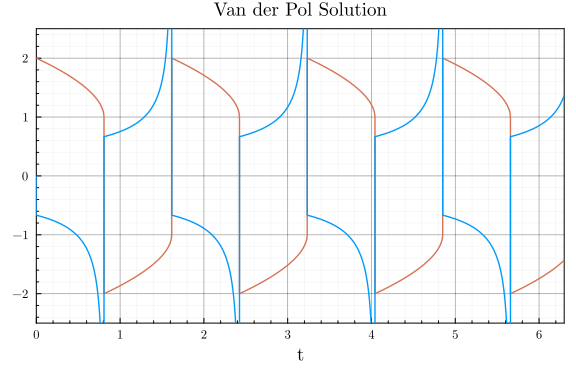
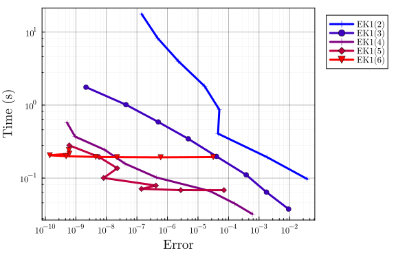
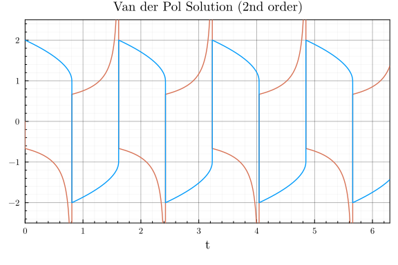
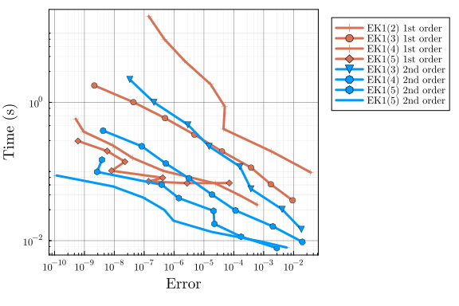

Van der Pol benchmark
using LinearAlgebra, Statistics, InteractiveUtils
using DiffEqDevTools, ParameterizedFunctions, SciMLBase, OrdinaryDiffEq, Plots
using ProbNumDiffEq
# Plotting theme
theme(:dao;
markerstrokewidth=0.5,
legend=:outertopright,
bottom_margin=5Plots.mm,
size = (1000, 400),
)Van der Pol problem definition
function vanderpol!(du, u, p, t)
du[1] = u[2]
du[2] = p[1] * ((1 - u[1]^2) * u[2] - u[1])
end
p = [1e5]
tspan = (0.0, 6.3)
u0 = [2.0, 0.0]
prob = ODEProblem(vanderpol!, u0, tspan, p)
test_sol = solve(prob, RadauIIA5(), abstol=1/10^14, reltol=1/10^14, dense=false)
plot(test_sol, title="Van der Pol Solution", legend=false, ylims=(-2.5, 2.5))
EK1 accross orders
DENSE = false;
SAVE_EVERYSTEP = false;
_setups = [
"EK1($order)" => Dict(:alg => EK1(order=order, smooth=DENSE))
for order in 2:6
]
labels = first.(_setups)
setups = last.(_setups)
abstols = 1.0 ./ 10.0 .^ (6:13)
reltols = 1.0 ./ 10.0 .^ (3:10)
wp = WorkPrecisionSet(
prob, abstols, reltols, setups;
names = labels,
#print_names = true,
appxsol = test_sol,
dense = DENSE,
save_everystep = SAVE_EVERYSTEP,
numruns = 10,
maxiters = Int(1e7),
timeseries_errors = false,
verbose = false,
)
plot(wp, palette=Plots.palette([:blue, :red], length(_setups)), xticks = 10.0 .^ (-16:1:5))
Solving the first- vs second-order ODE
function vanderpol2!(ddu, du, u, p, t)
ddu[1] = p[1] * ((1 - u[1]^2) * du[1] - u[1])
end
p = [1e5]
tspan = (0.0, 6.3)
u0 = [2.0]
du0 = [0.0]
prob2 = SecondOrderODEProblem(vanderpol2!, du0, u0, tspan, p)
test_sol2 = solve(prob2, RadauIIA5(), abstol=1/10^14, reltol=1/10^14, dense=false)
plot(test_sol2, title="Van der Pol Solution (2nd order)", legend=false, ylims=(-2.5, 2.5))
DENSE = false;
SAVE_EVERYSTEP = false;
_setups = [
"EK1(2) 1st order" => Dict(:alg => EK1(order=2, smooth=DENSE))
"EK1(3) 1st order" => Dict(:alg => EK1(order=3, smooth=DENSE))
"EK1(4) 1st order" => Dict(:alg => EK1(order=4, smooth=DENSE))
"EK1(5) 1st order" => Dict(:alg => EK1(order=5, smooth=DENSE))
"EK1(3) 2nd order" => Dict(:prob_choice => 2, :alg => EK1(order=3, smooth=DENSE))
"EK1(4) 2nd order" => Dict(:prob_choice => 2, :alg => EK1(order=4, smooth=DENSE))
"EK1(5) 2nd order" => Dict(:prob_choice => 2, :alg => EK1(order=5, smooth=DENSE))
"EK1(5) 2nd order" => Dict(:prob_choice => 2, :alg => EK1(order=6, smooth=DENSE))
]
labels = first.(_setups)
setups = last.(_setups)
abstols = 1.0 ./ 10.0 .^ (6:13)
reltols = 1.0 ./ 10.0 .^ (3:10)
wp = WorkPrecisionSet(
[prob, prob2], abstols, reltols, setups;
names = labels,
#print_names = true,
appxsol = [test_sol, test_sol2],
dense = DENSE,
save_everystep = SAVE_EVERYSTEP,
numruns = 10,
maxiters = Int(1e7),
timeseries_errors = false,
verbose = false,
)
plot(wp, color=[1 1 1 1 2 2 2 2], xticks = 10.0 .^ (-16:1:5))
Conclusion
- Use the
EK1to solve stiff problems, with orders $\leq 6$ depending on the error tolerance. - When the problem is actually a second-order ODE, as is the case for the Van der Pol system here, solve it as a second-order ODE.
Appendix
Computer information:
InteractiveUtils.versioninfo()Julia Version 1.8.5
Commit 17cfb8e65ea (2023-01-08 06:45 UTC)
Platform Info:
OS: Linux (x86_64-linux-gnu)
CPU: 12 × Intel(R) Core(TM) i7-6800K CPU @ 3.40GHz
WORD_SIZE: 64
LIBM: libopenlibm
LLVM: libLLVM-13.0.1 (ORCJIT, broadwell)
Threads: 12 on 12 virtual cores
Environment:
JULIA_NUM_THREADS = auto
JULIA_STACKTRACE_MINIMAL = true